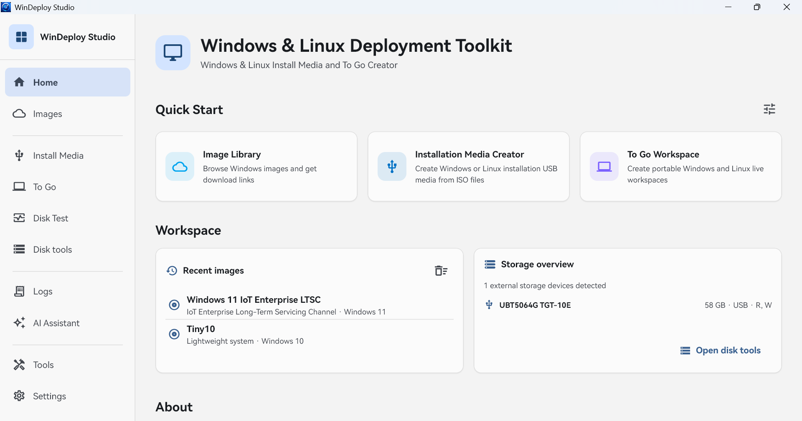

安装介质
创建 Windows 安装盘，或验证并写入 Linux ISOHybrid 镜像。
Windows & Linux Deployment Toolkit
在一个安静、可靠的桌面工作区中创建安装介质、随身系统并检查存储设备。

核心工作流
清晰地组织每一步，并在破坏性操作之前保留必要的确认和校验。
创建 Windows 安装盘，或验证并写入 Linux ISOHybrid 镜像。
使用结构预检、磁盘身份保护和适配的启动布局创建便携工作区。
检测速度、稳定性、健康数据和适合随身系统的实际表现。
部署前检查
从 ISO 结构、目标磁盘身份到写入后校验，关键步骤会在真正清除数据前重新确认。
产品演示
轮播展示 WinDeploy Studio 的全部主要界面。
保持最新